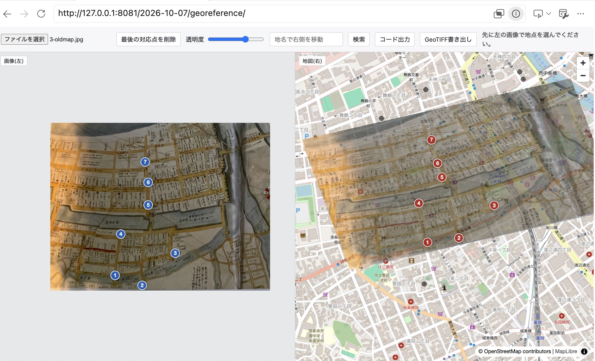
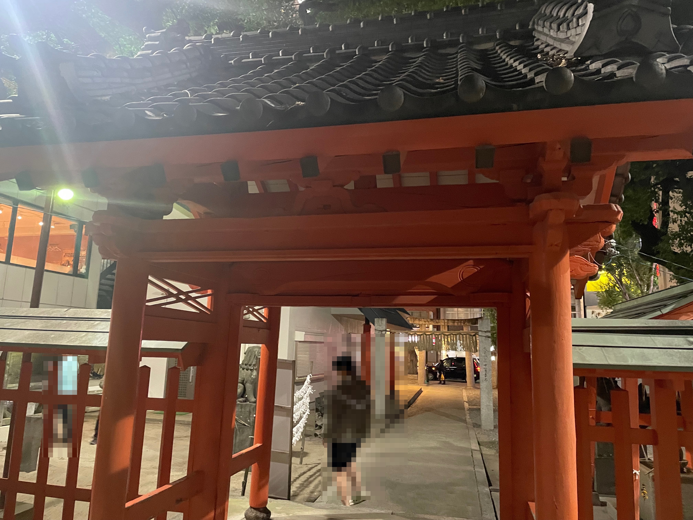
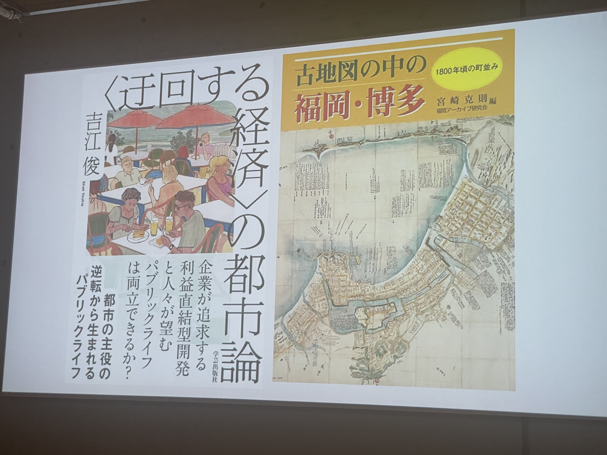

ドラッグで回転
ドラッグで回転
件の石
若宮神社境内に残る刻印のある石
形状 片面は強い侵食作用を受けている（凝灰岩のように見える）
刻印 もう片面には、萬町から明治三十三年に有志によって献上された旨が刻まれている

デジタル撮影した写真に地理空間情報との対応関係を以て幾何補正し、実際の地図に重ね合わせられるようにした。
いわれの推測
萬町（万町）はどうやら現在の舞鶴にあったようで、その地から、海の安全を祈願する豊玉姫命を祀る若宮神社へ石が移され、安置されるようになったらしい。
萬町
若宮

1800年（寛政12年）当時は昭和通りが海岸線であり、若宮神社の遷座が地図作成以前、その後明治期までに萬町が埋立地に成立し、磐座が移動されたと見られる。なお、明治33年は1900年、日露戦争の四年前である。
福岡藩の廃藩と、政府・行政による城下町の再開発に端を発した海岸線の埋め立ても重なり、海難安全の重要性が高まっていたのではないか。埋立地に位置する舞鶴地区には、福岡への新規流入者、周辺地域の旧城外の居住者、海産・海運関係者の住居があったと見られる。
2026年10月7日 夜刊
ふりくら
この石は、
どこから来たのか。
当班では、大名と今泉をつなぐ「上人橋交差点」「上人橋通り」の地名どおり、かつて実際に川が引き込まれていたことが古地図と現在の地図からわかり、濠や生活用水路がかつて存在した、古い水を訪ねることにした。
1800年ごろの古地図のジオリファレンスでタイポイントとしても用いた若宮神社を訪れたおり、現在は存在しない町名が刻まれた石が目に留まった。
位置関係
1800年ごろの地図は縮尺や測距の精度が良くないものの、通りの位置関係には現在と変わらない部分もあり、養巴町通りや紺屋町の醤油屋・教会の角など、ジオリファレンスに使いやすい点が多かった。
地図の上側（博多湾方向）はより省略された書き方であったものの、岩田屋から警固公園にかけてはかつて濠だったこと、新天町周辺には面積の広い商人屋敷があったことなどがわかる。
なお、大名地区の市管理道の名称は、福岡藩当時の通り名とは異なっている。

『古地図の中の福岡・博多』
宮崎克則 2005年刊
ISBN 978-4-87415-548-6 / C0021